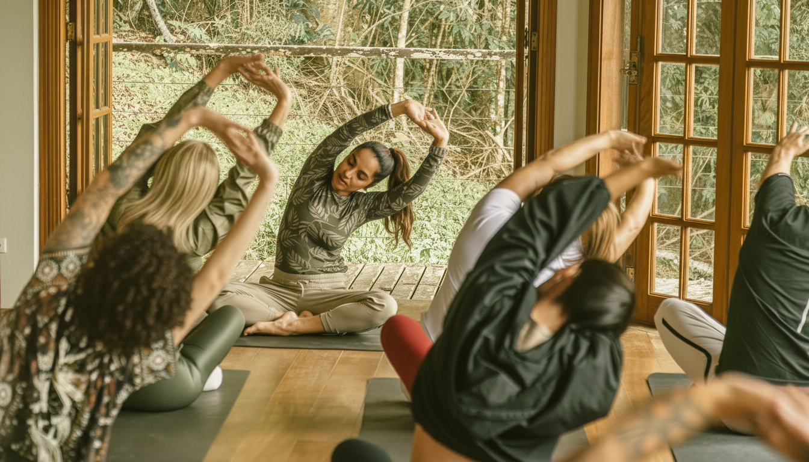

Yoga Personal
Toda a atenção da Gi. Só para você. Sessões individuais pensadas para o seu corpo, seus objetivos e seus limites. Online e no horário que encaixa na sua rotina.
Consulte disponibilidade →Descubra como mulheres que já tentaram tudo estão resgatando sua identidade através do Yoga, sem abandonar ninguém, sem culpa, sem falsas promessas.
A Promessa
Há um tipo de cansaço que não passa com sono. Não é preguiça. Não é falta de força de vontade.
É o que acontece quando você carrega tudo: filhos, trabalho, casa, família. E no final do dia não sobrou nada para você. A dor nas costas que virou rotina. A mente que não desliga, nem dormindo. A sensação de que, em algum ponto entre a maternidade e a correria, você desapareceu para si mesma.
Você já tentou de tudo para sair disso. YouTube, aplicativos, academia.
Começa com ânimo, a vida atropela, e você termina se convencendo que não é "o tipo de pessoa que consegue manter", que yoga é para quem tem tempo, flexibilidade, aquela tranquilidade que você não tem.
Mas e se o problema nunca foi você? E se foi tentar fazer sozinha, sem estrutura, sem alguém que realmente te vê?
Você não desistiu de yoga. Você desistiu de apps sem resposta e YouTube sem ninguém te vendo. Essa vez é estruturalmente diferente: há horário fixo, há correção em tempo real, há alguém que percebe quando você falta.
Em 2 semanas você dorme melhor. Em 4, sua respiração muda. Em 8, você percebe: eu voltei para mim.
Não é promessa. É o que minhas alunas costumam relatar.
Aqui você não pratica yoga sozinha. Pratica ao vivo, com acompanhamento real, quatro vezes por semana. Uma hora que é completamente sua.
Pra Quem É
Você tem 40 anos ou mais e quer uma prática que respeite seu corpo e sua rotina
Seja qual for seu nível — iniciante, intermediária ou quem ficou um tempo longe do tapete
Quer aliviar ansiedade, estresse, burnout e dor nas costas com consistência, não com força de vontade
Precisa dormir melhor e desligar a cabeça ao menos uma vez por dia
Não pode (ou não quer) se deslocar até um estúdio toda semana
Não precisa de experiência. Não precisa de flexibilidade. Não precisa de uma vida organizada para começar.
Há apenas o seu ritmo, e alguém ao seu lado para que você não precise ir sozinha.
Sobre a Professora
Professora de Yoga · Bailarina · Cirurgiã-Dentista · Mãe
Professora de yoga e acro yoga, bailarina clássica, cirurgiã-dentista e mãe de três meninas. Formada em mais de seis modalidades com certificação em Acroyoga pela Escola de Montreal, referência internacional na prática.
Com mais de duas décadas atravessando o corpo como espaço de estudo, ela construiu uma base que poucos professores de yoga têm: o olhar clínico da dentista, a precisão do ballet clássico e a escuta do yoga formam uma tríade rara.
Gi não chegou ao yoga como professora. Chegou como aluna, nos momentos em que o peso da vida parecia grande demais para carregar sozinha. Ela entende sua dor não por teoria, mas por experiência.
Hoje, como mãe de três meninas, essa prática ganhou um novo sentido. Não é mais só sobre o corpo em movimento. É sobre o exemplo silencioso de uma mulher que aprendeu, vez após vez, a se encontrar de volta.
Modalidades
Quatro vezes por semana. Aulas ao vivo com correção de postura em tempo real, sem sair de casa. Não é um vídeo gravado. É a Gi ao vivo, vendo você, ajustando sua postura, respeitando seu ritmo e te esperando toda semana.
Aulas pelo Zoom — celular, tablet ou computador, de onde você estiver
Cada semana tem um tema: cura, resgate, identidade, força, presença
Todas as aulas gravadas na Hotmart — para os dias em que a agenda não cooperar
Comunidade privada no WhatsApp com mulheres que vivem a mesma rotina
Meditação curta ao final de cada aula para fechar o ciclo
Câmera opcional no começo, uma toalha entre o sofá e a TV já basta.
Além das aulas online, a Gi oferece outras modalidades para quem quer um espaço diferente ou mais personalizado. Entre em contato para consultar disponibilidade e valores.
Toda a atenção da Gi. Só para você. Sessões individuais pensadas para o seu corpo, seus objetivos e seus limites. Online e no horário que encaixa na sua rotina.
Consulte disponibilidade →Prática em grupo, duplas ou individualmente. Leveza, força e conexão. Uma prática que une yoga, acrobacia e cumplicidade. Para quem deseja viver algo novo de uma forma leve e divertida.
Consulte disponibilidade →
A pausa que você merece há anos. Experiências imersivas ao longo do ano onde o tempo é todo seu. Longe da agenda e das notificações.
Ver próximas datas →O Que Está Incluído
Quem assina as aulas mensais não entra só nos encontros ao vivo. Entra com suporte, conteúdo e uma comunidade para os dias em que a rotina apertar.
Perdeu um encontro? Quer repetir a sequência favorita? A biblioteca completa fica disponível para acessar quando e quantas vezes quiser.
Instruções claras para entender cada postura, corrigir o alinhamento e evitar erros comuns na prática.
Quando a agenda não perdoa, sessões curtas de 20 minutos para não perder a continuidade. Manter o hábito nos dias difíceis é o que faz a prática durar.
Práticas curtas para desligar a cabeça e recuperar o foco. Sem jargão, sem misticismo. Só você, a respiração e alguns minutos.
Uma comunidade de mulheres que vivem a mesma rotina. Um espaço para compartilhar, se motivar e sentir que você não está fazendo isso sozinha.
Dúvida sobre uma postura? Algo no corpo que não parece certo? A Gi responde você de forma direta e personalizada.
Benefícios
Yoga regular regula o sistema nervoso e reduz o cortisol, o hormônio do estresse que impede o sono profundo. A maioria das alunas nota diferença nas primeiras semanas.
Postura corrigida em tempo real, alinhamento trabalhado sessão por sessão. Sem fazer errado por conta própria, sem se machucar.
Uma hora de respiração e movimento consciente faz o que nenhum aplicativo consegue: faz o corpo inteiro desacelerar de verdade.
Horários fixos quatro vezes por semana. A aula está lá, a Gi está lá. Você só precisa aparecer.
Sem deslocamento, sem trânsito, sem estacionamento. Em poucos minutos você está pronta. O tempo que você economiza já vale a prática.
Sem filho pedindo, sem mensagem de trabalho, sem nada da sua lista. Aquele espaço é só seu.
| Dia da semana | Horário | Duração |
|---|---|---|
| Segunda-feira | 8h00 | 1 hora |
| Terça-feira | 8h30 | 1 hora |
| Quinta-feira | 8h30 | 1 hora |
| Sexta-feira | 7h00 | 1 hora |
Se a semana apertar, todas as aulas ficam gravadas e disponíveis na Hotmart. Você nunca perde uma aula.
R$0
Gratuita, sem compromisso
1 aula completa ao vivo
Única, sem compromisso
R$250/mês
~16 aulas por mês · R$15,60 por aula
4 aulas/semana ao vivo
+ todos os bônus incluídos
R$ 250 por mês é R$ 15,60 por aula. Menos que um delivery. Menos que uma hora de estacionamento em estúdio. Com a diferença de que essa hora é sua, sem sair de casa, sem culpa, sem deslocamento.
Você investe no plano de saúde da família, na escola dos filhos, em tudo que eles precisam. Quando foi a última vez que investiu em quem sustenta tudo isso?
Depoimentos
Não amanhã.
Não na segunda-feira que sempre some.
Hoje.
Uma hora. Quatro vezes por semana. Com alguém que viveu o que você está vivendo e encontrou o caminho de volta.
Precisa de uma estrutura que funciona. De uma presença que não julga. De um espaço que é só seu.
Isso é o que Gi Borba oferece.
Vagas limitadas a 5 mulheres por semana, para garantir presença pessoal.
Sem cartão de crédito. Sem compromisso. Apenas a experiência.
As dúvidas mais comuns, respondidas com honestidade.
Yoga é uma prática que combina posturas físicas, respiração consciente e atenção ao corpo. Serve para reduzir ansiedade, melhorar o sono, aliviar dores crônicas e recuperar a sensação de equilíbrio. Não é religião, não exige flexibilidade e não depende de nenhuma crença espiritual — funciona por biologia, não por misticismo. Uma hora de yoga bem conduzida reduz a frequência cardíaca, diminui a pressão arterial e alivia tensões musculares que você carregava sem perceber.
Sim. Flexibilidade não é pré-requisito para o yoga — é consequência. Quem começa sem flexibilidade tem exatamente o yoga que precisa: adaptado ao corpo que tem hoje. Forçar além do que o corpo oferece não acelera o processo — machuca. A flexibilidade que você ainda não tem é exatamente o motivo para começar.
Para resultados perceptíveis no sono, na ansiedade e na flexibilidade: duas a três vezes por semana é suficiente para começar. Para quem quer progressão mais rápida: quatro vezes ou mais. A consistência importa mais do que a intensidade — três sessões por semana durante três meses superam em muito sessões diárias durante três semanas.
Sim, e a evidência é robusta. Estudos publicados no Journal of Clinical Psychiatry documentam redução significativa de sintomas de ansiedade em praticantes regulares. O mecanismo é fisiológico: técnicas de respiração ativam o nervo vago, reduzem o cortisol e desaceleram o sistema nervoso autônomo — efeitos mensuráveis em uma única sessão. A prática consistente recalibra o ponto de equilíbrio do sistema nervoso.
Sim. O yoga melhora o sono por dois caminhos complementares: regula os picos de cortisol ao longo do dia e, nas horas antes de dormir, ativa o sistema nervoso parassimpático. A maioria das alunas nota diferença nas primeiras duas semanas. A insônia mais comum não é a incapacidade de adormecer — é a incapacidade de desligar. O yoga oferece esse sinal ao sistema nervoso.
Sim — quando praticado com orientação adequada. O yoga atua na dor lombar crônica por múltiplos caminhos: fortalece a musculatura profunda do core, melhora a mobilidade dos quadris e isquiotibiais e corrige padrões posturais inadequados. Atenção: fazer yoga sem professor para condições de coluna pode piorar em vez de melhorar — a presença de quem vê e adapta é fundamental.
Não. O yoga é uma das práticas com menor barreira de entrada para adultos mais velhos. Os benefícios são proporcionalmente maiores para quem começa depois dos 40 — porque é exatamente nessa fase que os principais problemas que o yoga resolve se instalam: insônia, ansiedade, dores articulares, rigidez, esgotamento. As alunas que mais evoluem são, frequentemente, as que chegam depois dos 45.
Para a maioria das pessoas, sim — desde que seja ao vivo com professor que vê os alunos, não aula gravada. A correção verbal e visual, a presença, a adaptação em tempo real se mantêm integralmente online. A única diferença é o toque físico do professor. A consistência que o online propicia — sem deslocamento, sem trânsito — frequentemente supera o benefício marginal do presencial.
Sim, com precisão surpreendente. A correção verbal guiada visualmente — "afaste o joelho direito, sinta o peso distribuir no calcanhar" — é tão eficaz quanto o ajuste manual para a maioria das posturas. A professora vê o alinhamento, identifica as compensações e guia a correção em tempo real. Isso é fundamentalmente diferente de uma aula gravada, onde a professora fala para uma câmera sem ver ninguém.
Os primeiros resultados são rápidos: melhora do sono e redução de ansiedade costumam aparecer nas primeiras duas semanas. Flexibilidade e redução de dores crônicas aparecem entre 4 e 8 semanas. Mudanças de força, postura e composição corporal levam de 3 a 6 meses. A ordem importa: o sistema nervoso muda antes do corpo — e essa é frequentemente a mudança mais significativa.
Vocabulário acessível para quem está chegando ao yoga. Sem jargão, sem misticismo.
Prática que combina movimento, respiração e atenção ao corpo.
Não é religião, não exige flexibilidade e não depende de crenças espirituais. É uma ferramenta de autorregulação — aprende-se a usar o próprio corpo para reduzir ansiedade, melhorar o sono e recuperar a sensação de estar inteira.
A postura — a posição específica que o corpo assume durante a prática.
Cada asana tem uma forma e um propósito: algumas alongam, outras fortalecem, outras abrem o quadril ou estimulam a respiração. A postura "certa" é sempre a versão que o seu corpo consegue fazer hoje.
A prática consciente da respiração no yoga.
Não é "respirar fundo" de qualquer jeito: é usar o ritmo, a profundidade e a pausa da respiração para regular o sistema nervoso. Uma expiração longa e completa ativa o nervo vago e desacelera o coração em segundos.
O descanso final de toda aula de yoga.
O momento em que o sistema nervoso integra tudo o que foi trabalhado. Para quem vive no modo acelerado, savasana costuma ser a postura mais difícil — e a mais necessária. Pular o savasana é como cozinhar e servir antes de terminar.
A base de quase todo estilo de yoga praticado no Ocidente.
As aulas são pausadas — cada postura é mantida por algumas respirações antes de mudar. É o estilo ideal para iniciantes e para quem quer desacelerar sem parar de mover. A lentidão do Hatha é seu poder, não sua limitação.
Estilo em que os movimentos fluem em sincronia com a respiração.
As aulas são dinâmicas e criam calor interno. Ideal para quem se sente agitada demais para "ficar parada", pois o movimento constante ocupa e ao mesmo tempo ensina a mente a acalmar.
Prática de descanso ativo onde as posturas são mantidas por vários minutos sem esforço.
O objetivo é restaurar o sistema nervoso: não estimular, mas permitir que o corpo reverta o estado crônico de alerta. É a modalidade mais indicada para burnout e esgotamento emocional.
Abordagem que coloca a percepção interna do corpo no centro da prática.
Em vez de buscar a forma correta de uma postura, pergunta: como você sente isso? Especialmente eficaz para liberar tensões crônicas que têm raiz emocional — os ombros que nunca abaixam, o maxilar sempre contraído.
Prática lenta em que cada postura é mantida por 3 a 10 minutos com o corpo relaxado.
O alvo não são os músculos — são os tecidos conjuntivos profundos: fáscia, ligamentos e cápsulas articulares. Para quem tem mais de 40 anos, é a modalidade que resolve a rigidez articular que o treino convencional ignora.
Relaxamento guiado feito completamente deitada, entre a vigília e o sono.
Uma sessão de 30 minutos é descrita como equivalente a 2–3 horas de sono em recuperação do sistema nervoso. Para quem tem insônia ou ansiedade, é uma das ferramentas mais eficazes — porque não exige esforço, apenas deitar e seguir a voz.
Contato
Ainda tem dúvidas? A Gi responde pessoalmente.
✓ Mensagem enviada! A Gi vai entrar em contato em breve.
Ou fale direto pelo WhatsApp.